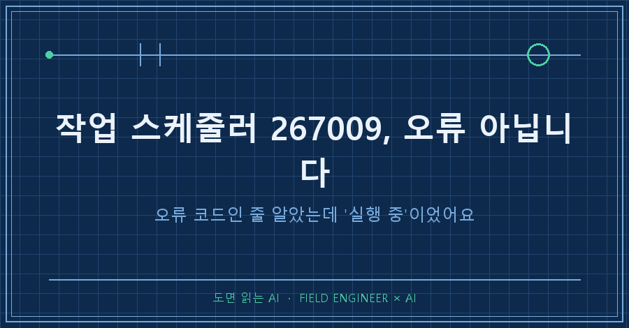
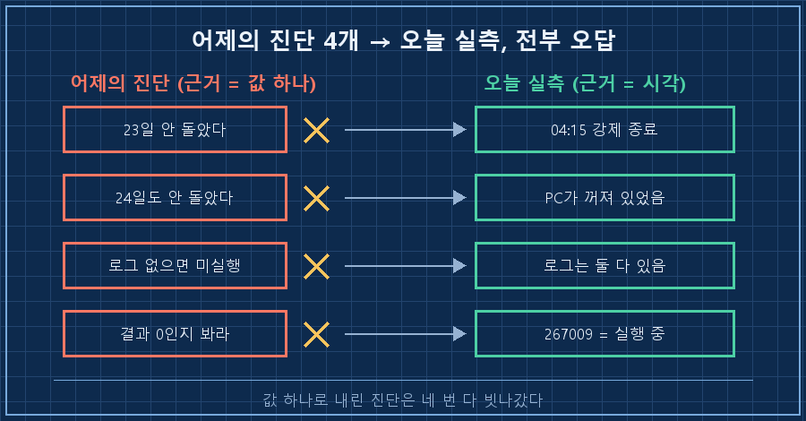
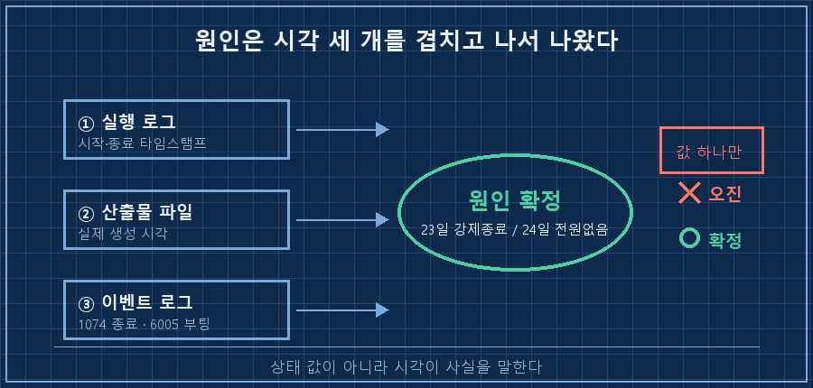
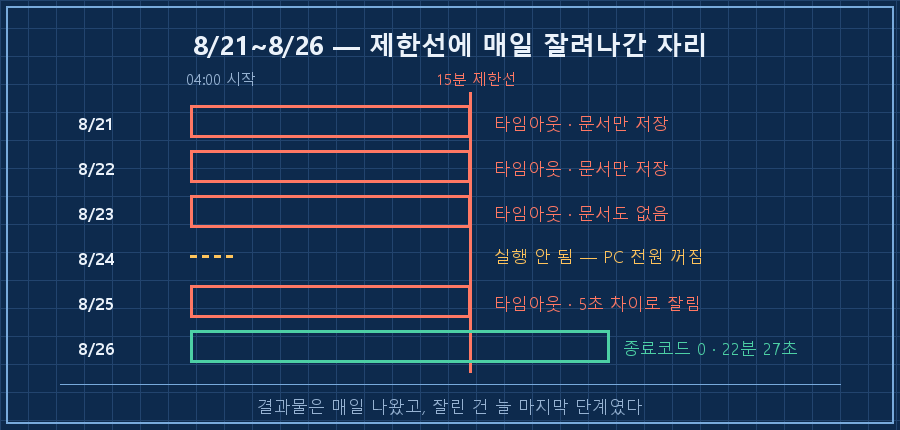

제 자동화가 나흘째 "완료"라고 로그에 찍고 있었어요. 그런데 남아야 할 기록은 5일치가 비어 있었습니다.
작업 스케줄러 267009라는 숫자가 마지막 실행 결과 칸에 떠 있었고, 저는 그걸 고장 신호로 읽었고요.
원인을 AI한테 정리시켰더니 네 가지를 짚어주더라고요. 다음 날 하나씩 직접 확인해봤는데, 네 개 전부 오답이었습니다.
짧게 먼저 적을게요.
작업 스케줄러 267009는 오류 코드가 아니라 "그 작업이 지금 실행 중"이라는 뜻입니다. 16진수로 바꾸면 0x41301이고요. 그래서 이 값이 떠 있다고 뭘 고치려 들면, 멀쩡한 걸 붙잡고 반나절을 버리게 됩니다.
그리고 하나 더. 자동화가 실패했는지는 상태 값이 아니라 시각에서 보입니다. 이게 오늘 글의 전부예요.
십오 년째 제조 설비 쪽에서 일합니다. 고장 원인 찾는 게 업무의 절반인데, 그중 태반은 "지금 보고 있는 이 계기가 맞는 계기인가"를 따지는 데 씁니다. 엉뚱한 계기 붙잡고 회의 두 시간 하는 거, 현장에선 흔한 일이거든요..
이번엔 제 PC에서 똑같은 짓을 했습니다.
2026년 8월, 윈도우 10에서 매일 새벽에 도는 개인 자동화 얘기예요. 확인은 전부 파워셸과 로그 파일로 했습니다.
1. 어제의 진단 4개, 오늘 보니 전부 오답
먼저 결과부터 놓고 보겠습니다. 왼쪽이 전날 AI가 정리해준 진단이고, 오른쪽이 다음 날 제가 직접 확인한 값이에요.
| 어제의 진단 | 오늘 실측 |
|---|---|
| "8월 23일·24일은 스케줄러가 안 돌았다" | 23일은 정상 실행됨. 04:00:01에 시작해서 04:15:01에 제한 시간 초과로 강제 종료 |
| "24일도 미실행" | 24일은 PC가 꺼져 있었음 (23일 20:56 종료 → 24일 07:12 부팅) |
| "로그 파일이 없으면 안 돈 것이다" | 로그는 양쪽 다 있었음. 이 잣대로는 아무것도 못 잡음 |
| "마지막 실행 결과가 0인지 보라" | 실제 값은 267009. 오류가 아니라 "실행 중" |
| "기록 공백은 소급 보완 완료" | 파일의 마지막 항목은 5일 전 날짜였음 |
네 가지를 물었는데 다섯 줄이 틀렸어요.
AI가 유난히 엉망이어서 그런 게 아닙니다. 다섯 줄의 근거가 전부 "값 하나"였거든요. 상태 값 하나, 파일이 있느냐 없느냐 하나. 제가 평소에 쓰던 잣대 그대로였고요.

2. 267009는 오류가 아니라 "실행 중"입니다
여섯 자리에 못 보던 숫자라 저는 당연히 오류 코드인 줄 알았어요. 파워셸에서 16진수로 바꿔보면 정체가 바로 나옵니다.
'{0:X}' -f 267009
# 413010x41301은 윈도우가 쓰는 상태 값이고, 이름이 SCHED_S_TASK_RUNNING이에요. 뜻 그대로 작업이 아직 실행 중이라는 표시입니다. 실패가 아니라 진행 중이라는 안내죠. (마이크로소프트 Q&A와 여러 기술 문서에서 "오류로 오인되는 성공 코드"로 정리돼 있습니다. 2026년 8월 확인)
그래서 이 값이 보일 때 판단은 이렇게 갈립니다.
- 시작한 지 몇 분 안 됐다 → 정상입니다. 그냥 도는 중이에요
- 몇 시간째 그대로다 → 그 프로세스가 안 끝나고 있는 겁니다. 코드를 고칠 게 아니라 무엇을 기다리는지 봐야 해요
제 경우는 후자에 가까웠고, 제한 시간 15분이 걸려 있어서 매일 04:15에 강제로 잘려나가고 있었습니다.
3. "로그 파일이 있으니 돌았다"는 잣대가 제일 위험했어요
가장 뼈아팠던 건 세 번째 진단이에요. 로그 파일이 있으면 돌아간 걸로 치자는 기준이요. 로그를 열어보면 왜 위험한지 바로 보입니다.
[2026-08-25 04:00:02] 데일리 리포트 시작
[2026-08-25 04:15:02] 타임아웃 (15분 초과)
[2026-08-25 04:15:02] 데일리 리포트 완료강제 종료된 바로 다음 줄에 "완료"가 찍혀 있죠.
코드를 열어보니 이유가 허무했어요. 타임아웃을 잡는 부분은 예외 처리 블록 안에 있는데, "완료" 한 줄은 그 블록 바깥에 있었습니다. 성공이든 실패든 마지막엔 무조건 찍히는 구조였던 거예요. (아래는 지금 시점의 코드라 제한 시간을 이미 30분으로 올려둔 상태입니다. 사고가 난 날들은 15분이었고요.)
except subprocess.TimeoutExpired:
log.write(f"\n[{datetime.now()}] 타임아웃 (30분 초과)\n")
except Exception as e:
log.write(f"\n[{datetime.now()}] 오류: {e}\n")
log.write(f"[{datetime.now()}] 데일리 리포트 완료\n\n")제가 몇 달 전에 저렇게 짜놓고 잊고 있었습니다. 그러니까 AI를 탓할 게 아니라, 거짓말하는 로그를 제 손으로 만들어 놓고 그걸 AI한테 읽으라고 준 셈이죠..
여기서 더 황당한 걸 발견했습니다! 25일 산출물 파일이 만들어진 시각은 04:14:57, 강제 종료는 04:15:02였어요. 5초 차이로 문서만 저장되고 그다음 기록 단계가 잘린 겁니다. 결과물은 매일 나왔으니 겉보기엔 멀쩡했고, 없어진 건 늘 마지막 단계 하나였어요.
4. 원인은 시각 세 개를 겹치고 나서야 나왔습니다
값 하나로는 안 되겠다 싶어서, 서로 다른 출처의 시각 세 개를 나란히 놓고 봤어요.
① 실행 로그의 시작·종료 타임스탬프
② 산출물 파일이 실제로 만들어진 시각
③ 윈도우 이벤트 로그의 종료·부팅 시각
③은 이렇게 뽑습니다. 1074는 "누가 종료를 지시했는가", 6005는 "부팅됐다"는 기록이에요.
Get-WinEvent -FilterHashtable @{LogName='System'; ID=1074,6005; StartTime=(Get-Date).AddDays(-7)} |
Select-Object TimeCreated, Id | Format-Table -AutoSize실제로 나온 값이 이거였고요.
TimeCreated Id
----------- --
2026-08-24 오전 7:12:37 6005 <- 부팅
2026-08-23 오후 8:56:33 1074 <- 전원 끄기, 사유: 기타(계획되지 않음)예약은 새벽 4시인데 PC가 전날 밤 8시 56분에 꺼져서 다음 날 아침 7시 12분에 켜졌어요. 그 사이에 4시가 들어 있으니 24일은 애초에 돌 수가 없었던 겁니다. 스크립트 문제가 아니었고요. (꺼져 있던 회차가 만회되지 않고 사라지는 얘기는 앞선 글에서 다뤘어요.)
그래서 23일은 강제 종료, 24일은 전원 없음. 원인이 두 개였는데 저는 하나로 묶어 보고 있었습니다.
세 시각을 겹쳐본 뒤로 제 점검 순서는 이렇게 바뀌었어요.
- [ ] 상태 값이 아니라 마지막 실행 시각부터 본다
- [ ] 산출물 파일의 생성 시각을 로그의 종료 시각과 나란히 놓는다 (몇 초 차이가 범인일 때가 있다)
- [ ] 그날 PC가 켜져 있었는지는 이벤트 로그 1074·6005로 확인한다
- [ ] 267009 같은 값은 의미부터 확인한다. 16진수로 바꾸면 대개 답이 나온다
- [ ] "완료"라고 찍는 줄이 예외 처리 바깥에 있는지 코드에서 확인한다

자주 묻는 것
Q. 제한 시간을 늘리면 해결되나요?
당장은 됩니다. 저도 900초에서 1800초로 올렸고 다음 날은 22분 27초 만에 정상 종료됐어요. 다만 이건 시간을 산 거지 고친 게 아닙니다. 작업이 무거워지는 속도가 그대로면 언젠가 30분도 넘겨요. 그래서 매일 걸린 시간을 같이 기록해두고 추세를 봅니다. 갑자기 튄 날보다 조금씩 길어지는 쪽이 진짜 위험 신호더라고요.
Q. 그럼 원인 진단을 AI한테 안 맡기는 게 낫나요?
아니요, 계속 맡깁니다. 대신 요구를 하나 더 붙였어요. "무엇을 근거로 그렇게 판단했는지 같이 적어라." 이번에 틀린 네 개는 근거가 전부 값 하나였는데, 근거를 적게 하니 그 빈약함이 바로 눈에 보이더라고요. 저 혼자 봤어도 똑같이 틀렸을 겁니다. AI는 제 잣대를 그대로 받아서 실행했을 뿐이고요.

혹시 작업 스케줄러 267009를 지금 보고 계신다면, 그건 고칠 대상이 아닐 확률이 높습니다. 대신 그 작업의 시작 시각과 지금 시각을 빼보세요. 저는 그 뺄셈 한 번을 나흘 동안 안 했습니다.
틀린 진단들은 따로 모아 makefield.ai에 오답 노트처럼 쌓아두고 있어요.
태그: #작업스케줄러267009 #0x41301 #작업스케줄러마지막실행결과 #자동화실패원인 #이벤트ID1074 #컴퓨터꺼진시간확인 #윈도우이벤트로그 #자동화점검 #자동화디버깅 #무인자동화 #파이썬자동화 #AI에이전트 #개인AI에이전트 #AI에게일시키기 #도면읽는AI